03 Plotting with quickPlot
Eliot J. B. McIntire
September 05 2017
Plotting in quickPlot
Most visualization approaches in R (e.g., base, RgoogleVis, ggplot2, rgl) are not optimized for speed or modularity. Rather, they are designed to build publication-quality or interactive figures that do not need to be redrawn hundreds or more times in rapid succession. Plotting requirements for many other uses, including simulation modeling, are different. Changes to data, maps, objects can happen rapidly and repeatedly. Visualizing this can be critical, especially during the model building phase. Furthermore, no plotting method has been designed for modularity – the ability to plot something without being aware of what is already there.
quickPlot comes with a plotting function to fulfill these two gaps. The main plotting function, Plot (i.e., with a capital P), is built using the grid package. We have specifically built a plotting system that allows for relatively fast plotting of rasters (in the raster package), SpatialPoints, SpatialPolygons, SpatialLines (all within the sp package), ggplot objects, histogram, and igraph (package igraph) objects with the ability to make multi-frame plots without knowing which plots are already plotted. In other words, the main plotting function can handle modular plotting, where each call to Plot adds plots, without each knowing what the current state of the active plotting device is. This means that plotting can be treated as modular. The Plot function is therefore intended to be used as a way to interact visually especially during development of rapid, repeated visualizations, such as simulation modeling. If fine tuning and customization are desired, other plotting tools may be more suited (e.g., ggplot2, or a dedicated GIS program).
To demonstrate plotting, we first load some maps. These maps are randomly generated maps that come with the quickPlot package. In the code snippet below, we create the list of files to load, which is every file in the maps/ subdirectory of the package. Then we load that list of files.
# Make list of maps from package database to load, and what functions to use to load them
library(data.table)
library(igraph)
library(raster)
library(quickPlot)
# omit forestAge and percentPine maps for simplicity
files <- system.file("maps", package = "quickPlot") %>%
dir(., full.names = TRUE, pattern = "tif")
filelist <- data.frame(file = files[-c(2, 5) ], stringsAsFactors = FALSE)
print(filelist)## file
## 1 /usr/local/lib/R/site-library/quickPlot/maps/DEM.tif
## 2 /usr/local/lib/R/site-library/quickPlot/maps/forestCover.tif
## 3 /usr/local/lib/R/site-library/quickPlot/maps/habitatQuality.tif# Load files to memory (using rasterToMemory), assign to a simList we call maps
maps <- lapply(filelist$file, function(x) raster(x))
names(maps) <- sapply(basename(filelist$file), function(x) {
strsplit(x, split = "\\.")[[1]][1]
})
# put into a single stack object in the simulation environment for ease of use below
landscape <- stack(maps$DEM, maps$forestCover, maps$habitatQuality)
The Plot function
There are several features of Plot that are worth highlighting. A primary purpose of Plot is to plot spatial type objects; however, as noted below, other object types can also be plotted. Spatial objects can be layered on top of one another; non-spatial objects can not.
Spatial layer types
Specifically, it currently can plot RasterLayer, RasterStack, SpatialPoints*, SpatialPolygons*, and SpatialLines* spatial objects. Because Plot uses the grid graphics system, changing plot parameters is done with the gp=gpar() designation. See ?gpar for options.
Plot(landscape, new = TRUE)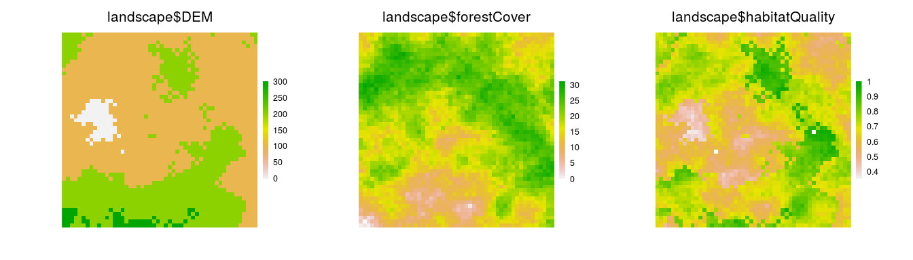
# make a SpatialPoints object
caribou <- SpatialPoints(coords = cbind(x = stats::runif(1e2, -50, 50),
y = stats::runif(1e2, -50, 50)))
Plot(caribou)
Plot(caribou, addTo = "landscape$habitatQuality")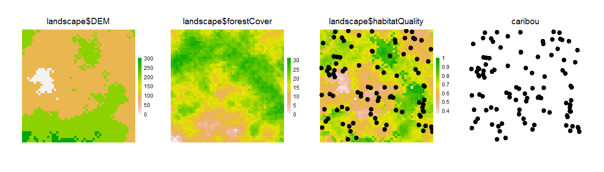
# from SpatialPolygons help file
sr1 <- Polygon(cbind(c(2, 4, 4, 1, 2), c(2, 3, 5, 4, 2)) * 20 - 50)
sr2 <- Polygon(cbind(c(5, 4, 2, 5), c(2, 3, 2, 2)) * 20 - 50)
srs1 <- Polygons(list(sr1), "s1")
srs2 <- Polygons(list(sr2), "s2")
spP <- SpatialPolygons(list(srs1, srs2), 1:2)
Plot(spP)
Plot(spP, addTo = "landscape$habitatQuality", gp = gpar(lwd = 2))
# from SpatialLines help file
l1 <- cbind(c(10, 2, 30), c(30, 2, 2))
l1a <- cbind(l1[, 1] + .05, l1[, 2] + .05)
l2 <- cbind(c(1, 20, 3), c(10, 1.5, 1))
sl1 <- Line(l1)
sl1a <- Line(l1a)
sl2 <- Line(l2)
s1 <- Lines(list(sl1, sl1a), ID = "a")
s2 <- Lines(list(sl2), ID = "b")
sl <- SpatialLines(list(s1, s2))
Plot(sl, gp = gpar(col = c("red", "blue"), lwd = 2), addTo = "landscape$DEM")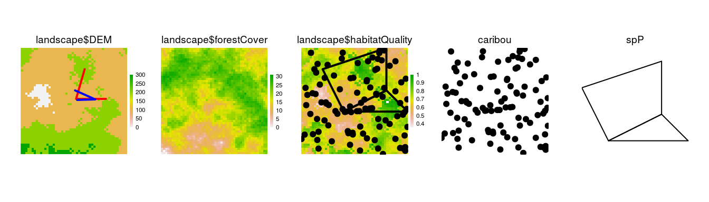
Any combination of RasterStack, RasterLayer, SpatialPoints*, and SpatialPolygons* objects can be plotted from a single invocation of Plot:
clearPlot()
Plot(landscape, caribou, maps$DEM, spP, axes = TRUE,
gp = gpar(cex = 0.5), visualSqueeze = 0.65)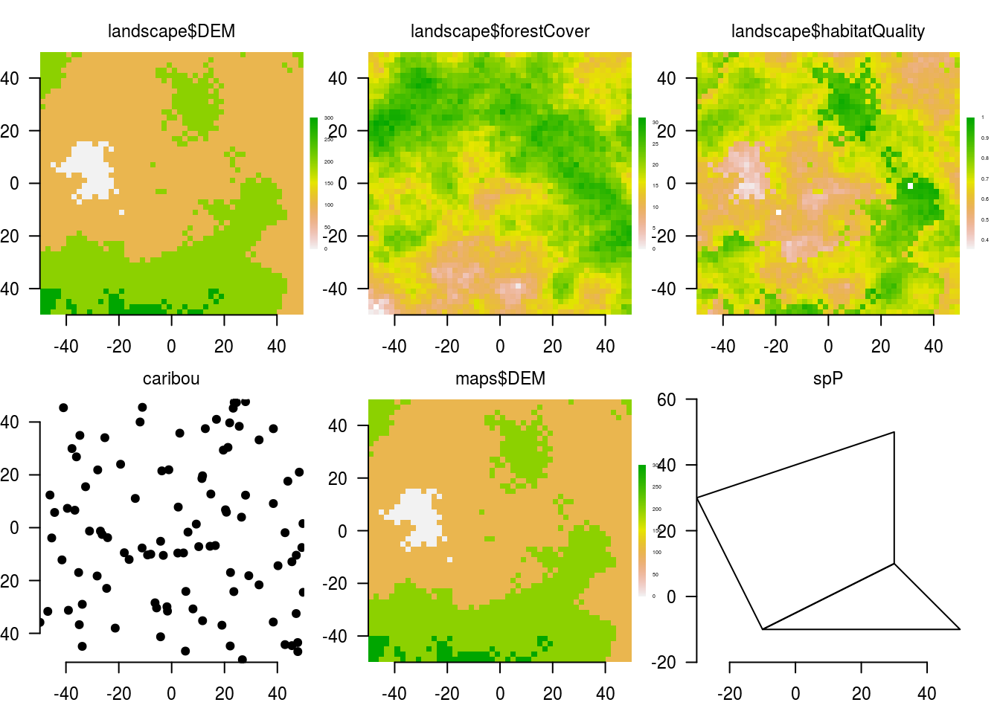
Other object types
ggplot2 objects
Plot can also handle gg objects as created with qplot or ggplot. These can be combined with spatial objects as well.
library(ggplot2)
ggObj <- qplot(stats::rnorm(1e3), binwidth = 0.1)
clearPlot()
Plot(caribou, axes = "L", new = TRUE) Plot(ggObj) 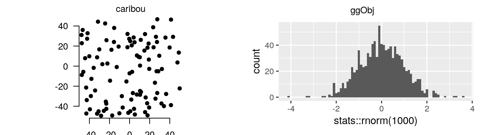
base plotting
Plot can is also a wrapper around plot.default. The advantage of using Plot is that you can place individual plots by named area, or have the Plot function do that automatically. The Plot function can only handle one of these at a time, unlike the previous cases. Most arguments that can be passed into plot should work here. Note, as with other objects passed to Plot, there must be a way for R to refind the data in order to replot it if a rearranged windows occurs. To do this, the user can provide a name for the plot, via addTo argument. If there is not yet an object with that name, then it will create it. If no addTo is passed in, then it will give the default, basePlot1, name.
If using addTo, and there are both x and y arguments, it will add points to the previous plot.
baseObj <- rnorm(1e3)
baseObj2 <- baseObj * 1.2 + rnorm(1e3)
clearPlot()
Plot(baseObj, axes = "L", ylab = "Something meaningful")
Plot(baseObj, baseObj2, addTo = "scatterplot", axes = TRUE)
newPoints <- rnorm(10)
newPoints2 <- newPoints * 1.2 + rnorm(10)
Plot(newPoints, newPoints2, addTo = "scatterplot", col = "red")Colours
We likely won’t want the default colours for every map. There are two ways to change the colour of a map: by adding a colortable to a Raster* object (e.g., using the setColors function in quickPlot), or using the cols argument of the Plot function. Adding a colortable to a Raster* will be more persistent (i.e., it will stay with the same colour table even if the device is wiped clean or a new device is created. Every RasterLayer can have a colortable, which gives the mapping of raster values to colours. If not already set in the file (many .tif files and other formats already have their colortable set), we can use setColors(Raster*) with a named list of colours, if a RasterStack, or just a vector of colours if only a single RasterLayer. These can be easily built with the RColorBrewer package, with the function brewer.pal(), colorRampPalette(), heat.colors(), or just a character vector of colours that will be interpolated. Note that overplotting (accomplished with addTo=) will not overplot the legend; in general, overplotting should be used for cases where the maps are compatible with the underlying map layer. See overplotting below.
zero.color is an optional string indicating the colour for zero values, when zero is the minimum value, otherwise, it is treated as any other colour. The default is NULL. Use "white" or another colour if this default is not desired.
na.color is an optional string indicating the colour for NA values. The default is transparent. Use "white" or another colour if this default is not desired. See text about na.color below after raster values have changed.
library(RColorBrewer)
# can change colour palette
clearPlot()
Plot(landscape) # original
mapColours <- list(
DEM = topo.colors(50),
forestCover = colorRampPalette(c("blue", "orange", "purple", "red"))(50),
habitatQuality = brewer.pal(9, "Spectral")
)
setColors(landscape, n = 50) <- mapColours
Plot(landscape, new = TRUE) # oh, how pretty!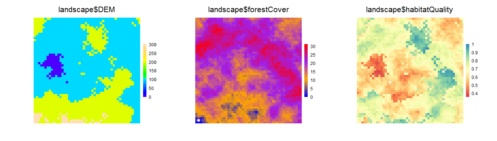
Plot arguments
grid graphical parameters: gp, gpText, gpAxis, size
These parameters will specify plot parameters that are available with gpar(). gp will adjust plot parameters, gpText will adjust the title and legend text only, gpAxis will adjust the axes only. size adjusts point size in a SpatialPoints object. Multiple entries can be used, but they must be passed as list elements and they will be matched to the ... items to plot.
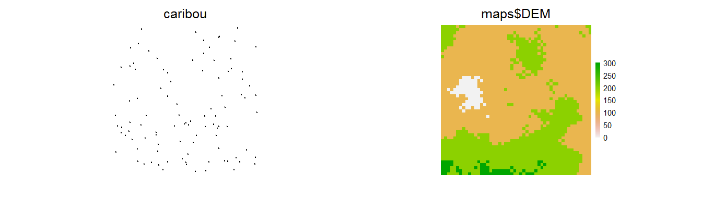

visualSqueeze
Under most circumstances, the plotting regions will be automatically scaled to maximize the area taken by the map layers, minimizing white space, but allowing axes, legends and titles to be visible when they are plotted. In some devices and some situations, this automatic scaling is imperfect, so axes or legends may be squished. The visualSqueeze argument is an easy way to shrink or grow the plots on the device. The default value is 0.75 representing ~75% of the area. If the plots need to be slightly smaller, this could be set to 0.6; if they can be larger, visualSqueeze could be set to 0.8. visualSqueeze is 1 for fully filled device.
A key reason why the legends or axes are cut off sometimes is because there is a minimum threshold for font size for readability. So, either visualSqueeze can be set or making a larger device will usually also solve these problems.
legend and legendRange
legend is a logical indicating whether a legend should automatically be added (the default). legendRange will allow overriding of the default automatic legend creation. This is useful in situations where, say, an version of a raster at the initial stage of a simulation does not cover the range of the eventual values of that raster. Since the default is to automatically scale the legend to the values contained in the raster at the first time it is drawn, the legend will not cover the whole necessary range. Adding legendRange = 0:20, where 0:20 covers the expected range of all stages of that raster, will work.
zoomExtent
A plot can be made with a custom zoom. This can either be done by cropping the object, or by doing a Plot call, passing an extent object via zoomExtent. A common way of using this would be to initially Plot an object, then use clickExtent, assigning the new extent to an object. Then call Plot(obj, zoomExtent=newZoom). This new zoom will persist with rearrangements.
Modularity
One of the main purposes of the Plot function is modularity. The goal is to enable any SpaDES module to be able to add a plot to the plotting device, without being aware of what is already in the plotting device. To do this, each open plotting device has a corresponding .quickPlot object in the .quickPlotEnv, that gets created when a first Plot function is called. This object keeps the layer names, their extents, and whether they were in a RasterStack (and a few other things). So, when a new Plot is called, and new is used, then it will simply add the new layer. There may not be space on the plot device for this, in which case, everything will be replotted in a new arrangement, but taking the original R objects. This is different than the grid package engine for replotting. That engine was not designed for large numbers of plots to be added to a region; it slows down immensely as the number of plots increases.
The new argument
The new argument wipes the individual plots that are being added to (via addTo explicitly or implicitly because it is the same object name as a current plot), and plots the new object or base plot in the stead of the old one. This can be used for changing any Plot argument, legend etc. The title, however, remains.
This argument can be passed in as a list if there are several objects being replotted. This list version is somewhat experimental so may not work as desired.
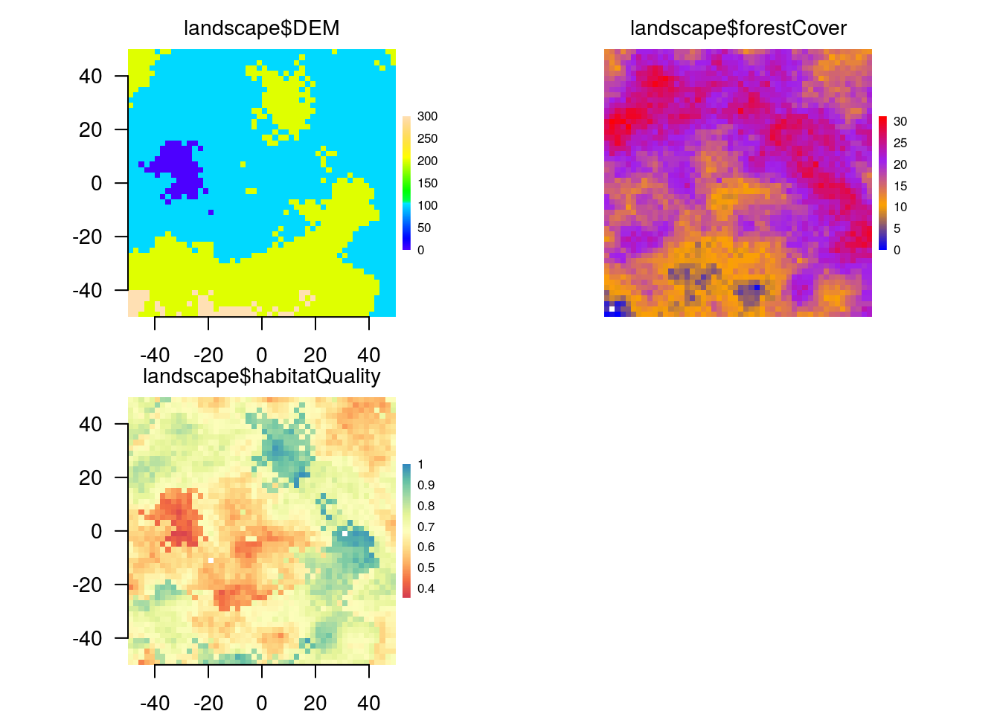
Calling Plot again and again
Plot is meant to be modular, so, making a Plot call does not wipe clear any previous plots. Rather, it adds the new objects or base plots. This may require a re-arrangement of the device. When Plot is called and a new plot is being added to an existing plot, the behaviour depends on how much blank space is currently available.
If there is a blank spot for a new plot
The Plot function simply adds the new plot in the available empty space.
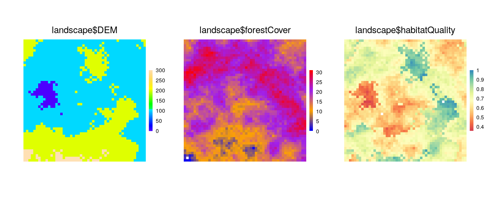
# can add a new plot to the plotting window
Plot(caribou, new = FALSE, axes = FALSE)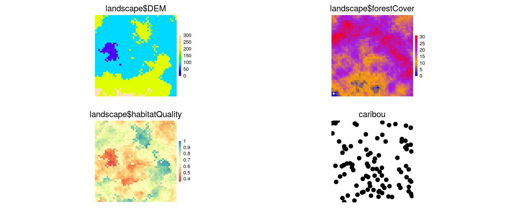
If there is not a blank spot for a new plot
The Plot function creates a new arrangement, keeping the pre-existing order of plots, and adding the new plots afterwards. The plots will all be a little bit smaller (assuming the device has not changed size), and they will be in different locations on the device.
# can add a new plot to the plotting window
Plot(caribou, new = FALSE, axes = FALSE)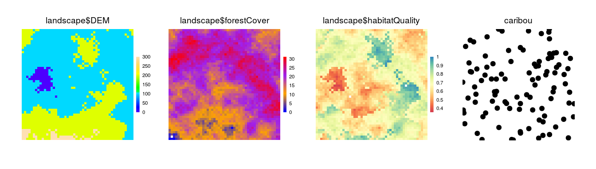
A pre-existing name to a device
The Plot function will overplot the new layer in the location as the layer with the same name. If colours in the layer are not transparent, then this will effectively block the previous plot. The legend will remain as per the original legend, unless new = TRUE is used.
clearPlot()
Plot(landscape)
landscape$forestCover[] = ((landscape$forestCover[] + 10) %% 30)
# can add a new plot to the plotting window
Plot(landscape, new = FALSE)
# note: zeros are treated as no colour by default.
# if this is not the correct behavior, can use `zero.color`
Plot(landscape, new = FALSE, zero.color = "blue")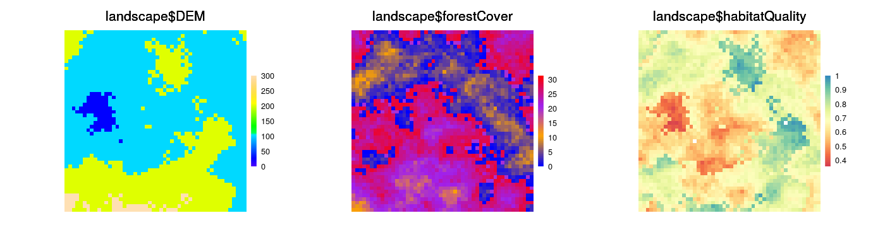
Plotting Speed
A second main purpose of the Plot function is to plot as fast as possible so that visual updates, which may be frequent, take as little time as possible. To do this, several automatic calculations are made upon a call to Plot. First, the number of plots is compared to the physical size of the device window. If the layers are RasterLayers, then they are subsampled before plotting, automatically scaled to the number of pixels that would be discernible by the human eye. If the layer is a SpatialPoints* object, then a maximum of 10,000 points will be plotted. These defaults can be adjusted by using the speedup argument. Broadly, speedup is a positive real number (default is 1). Values greater than 1 should plot faster; numbers between 0 and 1 should plot slower. There will be exceptions to this (see next), so trial and error for a particular situation is the only way to determine for certain what speedups will be gained.
speedup
The speedup argument is a relative speed increase at the cost of resolution if it is greater than 1. If it is between 0 and 1, it will be a relative speed decrease at the gain of resolution. This may be used successfully when the layer texture is particularly coarse, i.e., there are clusters of identical pixels, so subsampling will have little effect. In the examples below, the speedup gains are modest because the Rasters are relatively small (10,000 pixels). This speed gain will be much greater for larger rasters.
For SpatialPoints, the default is to only plot 10,000 points; if there are more than this in the object, then a random sample will be drawn. Speedup is used as the denominator to determine how many to plot, i.e., 10000/speedup.
In the example here, the speedup actually slows down plotting because the rasters are already very small. This would not be the case when the original Raster had 1e8 pixels.
system.time(Plot(landscape, caribou, maps$DEM, new = TRUE))## user system elapsed
## 0.496 0.000 0.499system.time(Plot(landscape, caribou, maps$DEM, speedup = 10, new = TRUE))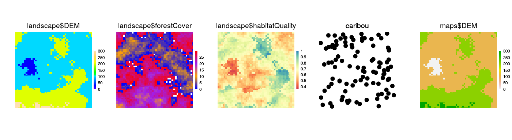
## user system elapsed
## 0.720 0.000 0.721# can add a new plot to the plotting window
Overplotting: addTo
There are times when it is useful to add a plot to a different plot with a different name. In these cases, the new argument will not work. The argument addTo will allow plotting of a RasterLayer or SpatialPoints* object on top of a RasterLayer, that does not share the same name. This can be useful to see where agents are on a RasterLayer, or if there is transparency on a second RasterLayer, it could be plotted on top of a first RasterLayer.
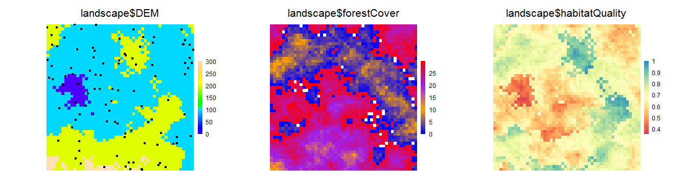
Clearing Plot
A device and all the meta-data associated with that device can be cleared with clearPlot function. Sometimes, the plot state can be “illegal” because it was interrupted during a previous plotting attempt. This function can be used to clear the device and all the associated metadata manually. Use “force = TRUE” to close the device, and reopen it, which is a sure-fire way to clear everything.
Plotting in RStudio
The built-in RStudio plot window is particularly slow. It is recommended to always create a new plotting device whenever real simulations are being done and they will be substantially faster.
Until this is fixed in RStudio, we have created a function, dev(x) which will add devices up to the number in the parenthesis, or switch to that device if it is already open. If an RStudio plot has not been called, dev() will create a new device outside RStudio. dev() can also be used with a number, as in dev(x=4) and this function will activate that device, if already exists, or open up all devices required in sequence from current device to x. Since RStudio uses 2 and 3 (for the png), a call to dev(4) will either create 3 new devices (device numbers 2, 3 and 4 because device number 1 is never used in R), or 1 new device if plotting to RStudio has already occurred.
To set the default graphics device to avoid using the RStudio one, use dev.useRSGD(FALSE), which sets the device option for your platform in order to bypass the RStudio graphics device. To reset this back to the RStudio device, use dev.useRSGD(TRUE).
Interacting with plots
clickValues
This can be used to obtain the values on the plotting device at the locations of the mouse clicks. This will work on multipanel plots. Note that plotting of rasters with the grid package does not allow for partial pixels to be plotted at the edges of the raster. As a result, the edges of pixels may not perfectly line up with the coordinates that they appear with. Do not rely on exact values when zoomed in
clearPlot()
Plot(landscape)
clickValues(3) # click at three locations on the Plot device
clickExtent
This can be used like zoom for base package plot window. Click two corners of a Plot.
clearPlot()
Plot(landscape)
clickExtent() # click at two locations on the Plot deviceReplotting or redrawing the entire plot window
rePlot can be used to redraw the entire plot window, either in the same frame as before (the default) or in a new frame. If in a new frame, the new device will be created, then the entire Plot window will be redrawn in the new device. This function can also be used to redraw everything after a window gets resized manually and objects become distorted. Some plot arguments can be passed via rePlot, such as visualSqueeze, axes, but not all. Further functionality like this will likely be in a future update.K
Assigning Plot() to object
The output of a Plot call can be assigned to an object for future plotting. Simply pass the object name as if it were a Plot object. Any data changes made to the objects contained within the plot, if they are in the .GlobalEnv or a envir will be reflected in the new plot, because the data are replotted from their original source. This provides the same behavior as a call to rePlot().